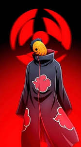

Cargando



¿Quiénes son los Akatsuki?
Akatsuki es una organización clandestina formada por algunos de los ninjas más peligrosos y poderosos del mundo shinobi. Su objetivo principal era reunir a los bijuu para lograr el control absoluto y “traer la paz” al mundo... a su manera.
- Pain (Nagato): Líder de Akatsuki. Controla los Seis Caminos del Dolor y busca imponer la paz mediante el miedo.
- Konan: Leal compañera de Nagato. Usa el origami como arma, transformando el papel en proyectiles y trampas mortales.
- Itachi Uchiha: Genio del Clan Uchiha. Maestro del Sharingan, se unió a Akatsuki por motivos más profundos de lo que parecía.
- Kisame Hoshigaki: El monstruo de la Niebla. Porta la espada Samehada, capaz de absorber chakra.
- Deidara: Artista explosivo. Cree que el arte es una explosión, literalmente.
- Sasori: Maestro titiritero de la Arena. Convirtió su propio cuerpo en una marioneta para alcanzar la inmortalidad.
- Hidan: Fanático inmortal del dios Jashin. Mata en rituales sangrientos para su fe.
- Kakuzu: Obsesionado con el dinero. Puede usar múltiples corazones de sus víctimas para extender su vida.
- Tobi (Obito Uchiha): Manipulador oculto detrás de todo. Finge ser un tonto, pero es uno de los cerebros maestros del plan final.
Todos compartían una misma capa negra con nubes rojas: símbolo del dolor derramado en Amegakure, la Aldea de la Lluvia. Juntos, fueron una amenaza que cambió el rumbo del mundo ninja para siempre.